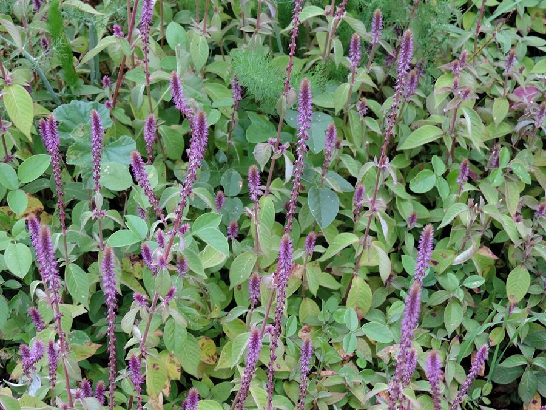

चिरचिटाPrickly Chaff Flower
Achyranthes aspera · Amaranthaceae · FLR-0016

- Scientific name
- Achyranthes aspera L.
- Family
- Amaranthaceae
- Hindi
- चिरचिटा / अपामार्ग
- Status here
- native
- IUCN
- not evaluated
When to look कब देखें
Present all year.
चिरचिटा / Prickly Chaff Flower
Achyranthes aspera L. — Amaranthaceae
चिरचिटा — पूर्वी यूपी में अक्टूबर में खेत की मेड़ से गुज़रने वाला हर इंसान चिरचिटा को जानता है — भले नाम न जानता हो। कपड़ों से चिपकने वाले काँटेदार बीज इस पौधे की कारीगरी हैं — लाखों साल में विकसित एक यांत्रिक यात्री।
हिंदी परिचय Hindi Overview
चिरचिटा (Achyranthes aspera) भारत का सबसे परिचित सड़क-किनारे का खरपतवार है। Amaranthaceae परिवार का सदस्य — चौलाई का रिश्तेदार।
इस पौधे की मुख्य विशेषता है उसके फल/बीज: छोटे, नुकीले, कठोर — और कपड़े, जानवर के बाल, और पक्षियों के पंख से चिपकने में माहिर। यह तकनीक Zoochory (प्राणि-प्रकीर्णन) कहलाती है — जानवरों के ज़रिए बीज फैलाना।
चिरचिटे का फल एक "passive hitchhiker" है — जानवर या इंसान जब उससे रगड़ता है, बीज चिपक जाता है और दूर चला जाता है। यही Velcro (वेल्क्रो) का प्राकृतिक संस्करण है — और वास्तव में, जॉर्ज डी मेस्ट्रल ने 1941 में अपने कुत्ते के बालों से चिपके बीजों को देखकर Velcro का आइडिया लिया था।
आयुर्वेद में: अपामार्ग की जड़ और बीज दशकों से दाँत दर्द, मूत्र रोग, और सर्पदंश में प्रयुक्त होते रहे हैं।
Quick Identification शीघ्र पहचान
| Feature | Description |
|---|---|
| Height & Habit | Erect, wiry annual/perennial herb or subshrub, 30–100 cm tall; stems square in cross-section |
| Leaves | Opposite, ovate to elliptic or obovate, 3–10 cm long, rough-hairy, margins smooth (entire) |
| Flowers | Small (3–4 mm), greenish-white, densely clustered on long terminal spikes (10–30 cm long) |
| Seeds/Fruits | Small utricles (4–6 mm long) with 2 stiff, spine-tipped reflexed bracteoles |
| Dispersal | Extreme mechanical stickiness; seeds cling instantly to clothing, fur, and feathers |
| Stem | Wire-like, often tinged with red or purple; hairy at nodes |
Field tip: Look for an upright, stiff, green-or-purplish weed with square stems and long, upright flower spikes. After flowering, the seeds point downward and cling instantly to any fabric that brushes them. Guerin's Freshwater Crab (Barytelphusa guerini) and other field animals frequently carry these seeds.
Morphology आकृति विज्ञान
| Feature | Measurement |
|---|---|
| Plant height | 30–100 cm |
| Leaf length | 3–10 cm |
| Leaf width | 1.5–5 cm |
| Flower diameter | 3–4 mm |
| Fruit / seed dimensions | 4–6 mm (dispersal unit length) |
Habit: Erect annual or short-lived perennial herb; 30–100 cm; stem wiry, often with purplish or reddish tinge; square in cross-section; hairy.
Leaves: Opposite; ovate to elliptic-ovate; 3–10 cm × 1.5–5 cm; both surfaces with soft hairs; apex acute to rounded; base broadly cuneate; margin entire. Petiole 0.5–2 cm.
Inflorescence: A terminal or axillary spike; 10–30 cm at maturity. Flowers initially pointing upward; after anthesis, they reflex (bend downward/backward) along the spike — this reflexed position is diagnostic.
Flower: Small (3–4 mm); 5 sepals (greenish-white); 5 stamens; 2 staminodes (sterile); bracteoles 2, persistent, hardening and becoming spine-tipped after anthesis.
Fruit (utricle): 1 seed enclosed. The dispersal unit is the utricle + 2 hardened, spine-tipped bracteoles. Each bracteole 4–7 mm, rigid, with tiny downward-pointing barbs on the surface — these barbs engage instantly with fabric weave or hair.
The dispersal mechanism in detail: The barbs are microscopic backward-pointing hooks (similar to the Velcro principle). When fabric or fur presses against the spike, multiple barbs engage simultaneously, making removal difficult. The design distributes force across multiple hooks — removing one at a time is tedious.
हिंदी: तना चौकोर — Amaranthaceae की पहचान।
फूल पीछे मुड़ जाते हैं (reflexed)।
2 काँटेदार bracteoles — सूक्ष्म हुक से भरे।
Velcro की तरह काम करते हैं।
Ecological Impact पारिस्थितिकी
Seed dispersal (Zoochory): Chirchita is one of the most effective zoochorous plants in the eastern UP flora. Dispersal vectors include:
- Cattle and buffalo — the long-haired switch tail and leg hair carry seeds kilometres
- Dogs — seeds accumulate in fur, especially around the neck and belly
- Humans — clothing (especially cotton weave and socks); seeds are pulled off after returning from fields, depositing them in new locations
- Birds — seeds occasionally attach to leg feathers
One plant can produce 500–2,000 seeds per season. Even 1% long-distance dispersal represents significant genetic mixing across the landscape.
Pollination: Small bees, flies, and beetles visit the inconspicuous flowers for pollen. Not a significant nectar source; pollination is primarily by small generalist insects.
Pioneer ecology: Chirchita germinates rapidly in disturbed soil. It is often one of the first plants to colonize a freshly cleared roadside, field bund, or tilled margin. Its fibrous root system holds loose soil, slightly reducing erosion.
Allelopathy: Some evidence that chirchita root exudates suppress germination of nearby plants — contributes to its competitive ability in roadsides.
हिंदी: गाय, कुत्ते, इंसान — बीज ले जाते हैं।
एक पौधा: 500–2,000 बीज।
उजड़ी ज़मीन में पहले उगता है — मिट्टी बाँधता है।
जड़ से रसायन — पड़ोसी पौधों को रोकता है।
Life Cycle / Phenology जीवन चक्र
- Germination: June–July (monsoon onset); also February–March; dual germination peaks
- Vegetative growth: Fast — full height in 6–10 weeks
- Flowering: August–November; spike elongates progressively; lower flowers set fruit while upper flowers still bloom
- Fruiting/dispersal: September–March; peak dispersal October–January when the sticky seeds are most numerous and animals/humans most active in fields
- Death: Plants die back in summer heat; soil seed bank persists
- Lifespan: Annual to short-lived perennial; some plants persist 2+ years in sheltered spots
हिंदी: जून–जुलाई: अंकुरण।
अगस्त–नवम्बर: फूल।
अक्टूबर–जनवरी: बीज फैलाव — सबसे सक्रिय।
गर्मी में मर जाता है।
Agricultural / Human Relevance कृषि और मानव संबंध
The Velcro connection: George de Mestral, a Swiss engineer, invented Velcro in 1941 after removing burdock (Arctium) seeds from his dog's fur and examining the hooks under a microscope. The identical principle applies to chirchita — any textile engineer could have invented it by studying the chirchita bracteole under a hand lens. The design is millions of years old.
Ayurvedic uses (Apamarga): Chirchita is one of the herbs listed in Charaka Samhita and Sushruta Samhita. Uses include:
- Root powder — used as tooth powder (dant manjan) for gum disease; analgesic, antimicrobial properties documented
- Seeds — traditionally used as diuretic; modern phytochemical studies confirm saponins that increase urine output
- Leaf paste — applied to scorpion sting and insect bites in folk medicine
- Whole plant — used in ritual purification ceremonies (havan material)
Weed status in fields: Chirchita is a minor field weed — it does not damage crops directly, but the seeds contaminate harvested grain (particularly small-seeded crops like sesame and millet) and reduce threshing efficiency.
हिंदी: Velcro का विचार इसी तरह के बीजों से आया।
आयुर्वेद में अपामार्ग: दाँत का मंजन, मूत्र-वर्धक।
बिच्छू काटने पर पत्ती लगाना — लोक चिकित्सा।
अनाज में मिल जाते हैं — मामूली नुकसान।
Expected Locally स्थानीय रूप से अपेक्षित
Not a field record. Written from published accounts for eastern Uttar Pradesh. No confirmed local sighting yet — if you have seen it, that is what the atlas needs.
अभी तक स्थानीय पुष्टि नहीं। यह विवरण प्रकाशित स्रोतों से है, किसी अवलोकन से नहीं।
| Date | Location | Notes |
|---|---|---|
Distribution वितरण
Global range: Widespread throughout tropical and subtropical regions of the world; native to parts of Asia, Africa, and Australia, and widely naturalized in the Americas.
In India: Found as a common ruderal weed throughout the country, from the sea level up to elevations of about 1,200 meters in the Himalayas.
In Uttar Pradesh: Ubiquitous across all districts, growing abundantly along roadsides, railway tracks, field margins, and village waste lots.
In Basti district / eastern UP: Extremely common in Basti and surrounding districts, especially along dirt tracks, irrigation bunds, and disturbed soils.
Range notes: No significant range changes documented; remains stable and highly abundant.
Research Questions शोध प्रश्न
Anyone can investigate these | कोई भी इन प्रश्नों की जाँच कर सकता है
- How many seeds does one chirchita plant produce? / एक चिरचिटे के पौधे में कितने बीज होते हैं? — Count the total number of fruits on one mature spike; multiply by number of spikes. Repeat for 10 plants; calculate average.
- Which animal disperses seeds most effectively in your area? / आपके क्षेत्र में कौन सा जानवर बीज सबसे दूर ले जाता है? — Observe which animals brush against chirchita; estimate how far they walk before the seeds are removed (grooming, rubbing).
- What is chirchita density on grazed vs. ungrazed roadsides? / चराई वाली और बिना चराई वाली सड़क पर चिरचिटा कितना है? — Count plants per 10m stretch on 5 grazed vs. 5 ungrazed road sections. More dispersal by cattle = more plants on grazed routes?
- Does root exudate suppress other plants? / क्या इसकी जड़ से निकलने वाला रसायन पड़ोसी पौधों को रोकता है? — Compare plant density within 10 cm of chirchita vs. 50 cm away in the same soil. Is the area immediately around the plant less vegetated?
- What is the traditional Ayurvedic use in your village? / आपके गाँव में अपामार्ग का क्या उपयोग है? — Interview 5 elders or village healers; document any current or past uses.
Similar Species मिलती-जुलती प्रजातियाँ
| Species | How to tell apart | हिंदी |
|---|---|---|
| Achyranthes bidentata | Nearly identical; bracteoles shorter; more upland forest habitat; less common on roadsides | वैसा ही — जंगल में |
| Pupalia lappacea | Similar habit; flowers in spikes; but bracteoles with 3–5 hooked spines in a star pattern; sticky but differently shaped | तारे जैसे काँटे |
| Cyathula prostrata | Low-growing; smaller; bracteoles with reflexed bristles; common in shade | नीचे उगता है — छाँव में |
Field rule: Erect roadside herb + opposite hairy leaves + elongated spike + seeds with 2 stiff backwardly-reflexed spiny bracteoles that stick to clothing = Achyranthes aspera. Once you pull these seeds off your clothes, the identification is made.
Taxonomy & Classification वर्गीकरण
Original description. Achyranthes aspera was described by Carl Linnaeus in 1753 in Species Plantarum 1: 204. Type locality: India ("Habitat in Sicilia, Zeylona, Jamaica, Sibiria"). The genus name Achyranthes is derived from the Greek achyron (chaff) and anthos (flower), referring to the dry, chaff-like flowers.
Subspecies. Several varieties exist, with Achyranthes aspera var. indica being the dominant form in the plains of Uttar Pradesh.
Family and order placement. Belongs to the order Caryophyllales, family Amaranthaceae, subfamily Amaranthoideae. Amaranthaceae is a diverse family of herbs and shrubs known for wind-pollinated, dry flowers, containing about 180 genera and 2,500 species globally.
Phylogenetic notes. Molecular studies place Achyranthes in the Amaranthoideae clade, closely related to Pupalia and Aerva. The family Amaranthaceae was recently expanded under APG to incorporate the family Chenopodiaceae.
IUCN status rationale. This species has not been formally assessed by the IUCN Red List. As a common pantropical weed, its population is extremely stable and expanding, and faces no conservation threats.
Photo Gallery फोटो गैलरी
Note: Add field photos tomedia/species/chirchita/
फोटो निर्देश: पूरा पौधा (spike दिखाते), spike का close-up (reflexed फल), कपड़े पर चिपके बीज (सबसे ज़रूरी!), और पत्ती।
Photos needed आवश्यक फोटो
- [ ] Full plant on roadside (पूरा पौधा — सड़क पर)
- [ ] Spike close-up — reflexed fruits (spike — पीछे मुड़े फल)
- [ ] Seeds stuck to cloth — demonstration shot (कपड़े पर चिपके बीज)
- [ ] Seed close-up showing barbs (बीज — काँटे दिखाते)
- [ ] Leaf pair (पत्तियाँ — एक जोड़ा)
Atlas Connections संबंधित प्रजातियाँ
- Congress Grass — shares roadside disturbed habitat; often co-occurs on the same roadsides (FLR-0001)
- Dhatura — shares waste ground and roadside niche; both pioneer disturbed soil (FLR-0015)
- Common Myna — myna frequently forages along roadsides where chirchita grows; may disperse seeds clinging to feet (BRD-0006)
References संदर्भ
- Linnaeus, C. (1753). Species Plantarum, 1: 204. Laurentii Salvii, Holmiae.
- Hooker, J.D. (1885). Flora of British India, Vol. 4. L. Reeve & Co., London.
- Khare, C.P. (2007). Indian Medicinal Plants: An Illustrated Dictionary. Springer, Berlin.
- Botanical Survey of India — Flora of Uttar Pradesh.
- de Mestral, G. (1955). Velvet-type fabric and method of producing same. US Patent 2,717,437. [Connection to chirchita's hook mechanism]
- GBIF Occurrence Data — Achyranthes aspera, India (2026).
Source file: species/flora/weeds/chirchita.md